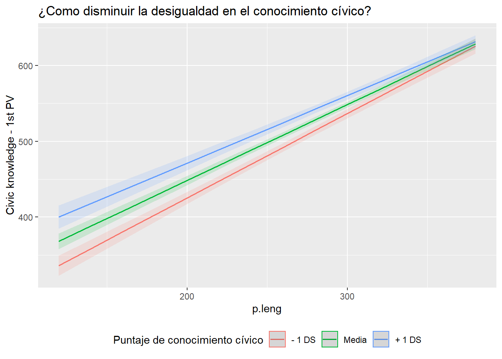
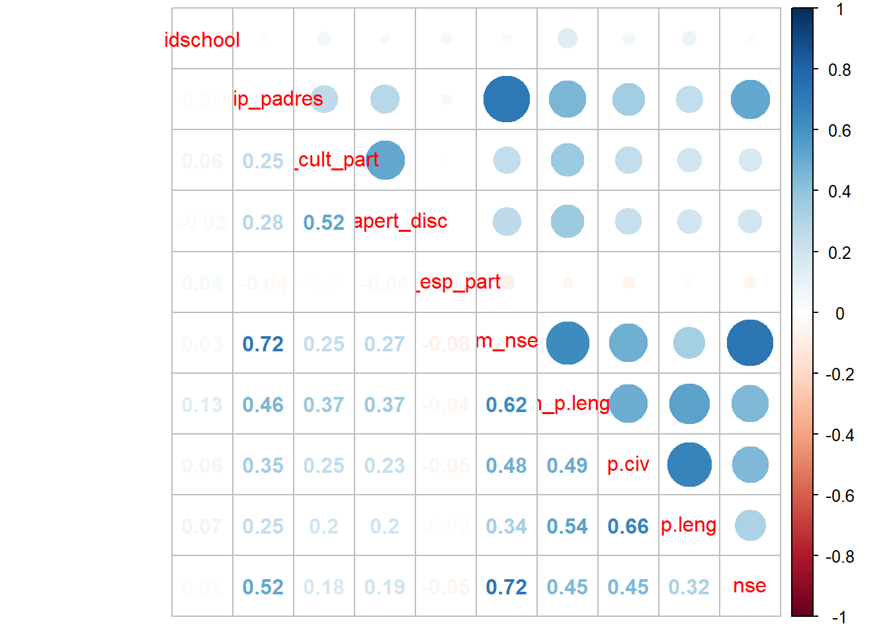

tesis
francisco meneses
24-10-2019
Cargar librerías
pacman::p_load(lme4,
reghelper,
haven,
descr,
stargazer,
ggplot2, # gr?ficos
dplyr, # manipulacion de datos
texreg, # tablas lme4
sjPlot #graficos
)iccssimce <- read_dta("../input/data/original/iccs_simce.dta")data <- iccssimce %>% select("p.leng"=ptje_lect8b_alu, "p.mat"=ptje_mate8b_alu, "p.nat"=ptje_nat8b_alu, "p.civ"=PV1CIV, "nse"=S_NISB, "ip_estudiante"=S_SINT, "ip_padres"=S_HINT,idschool,apert_disc=S_OPDISC, "cult_part"=S_VALPARTS, esp_part=C_ENGAGE , "Libros"=S_HOMLIT, "Ocupacion" = S_HISEI, "Educacion"=S_HISCED, IC3G13A, rel_prof=S_STUTREL, S_ABUSE) %>% as.data.frame()
data = na.omit(data)
data$Libros<-ifelse(data$Libros>=2,1,0)
data$IC3G13A<-ifelse(data$IC3G13A==2,1,0)
data$ip_padres<-ifelse(data$ip_padres>=2,1,0)
data$Educacion<-ifelse(data$Educacion>=3,1,0)
data$ip_estudiante<-ifelse(data$ip_estudiante>=2,1,0)
data <- data %>%
group_by(idschool) %>%
mutate(m_nse = mean(nse))
data <- data %>%
group_by(idschool) %>%
mutate(m_apert_disc = mean(apert_disc))
data <- data %>%
group_by(idschool) %>%
mutate(clima_prof = mean(rel_prof))
data <- data %>%
group_by(idschool) %>%
mutate(m_esp_part = mean(esp_part))
data <- data %>%
group_by(idschool) %>%
mutate(m_ip_estudiante = mean(ip_estudiante))
data <- data %>%
group_by(idschool) %>%
mutate(sd_nse = sd(nse))
data <- data %>%
group_by(idschool) %>%
mutate(m_ip_padres = mean(ip_padres))
data <- data %>%
group_by(idschool) %>%
mutate(m_cult_part = mean(cult_part))
data <- data %>%
group_by(idschool) %>%
mutate(m_p.leng = mean(p.leng))summary(data)## p.leng p.mat p.nat p.civ
## Min. :126.0 Min. :142.0 Min. :149.0 Min. :232.1
## 1st Qu.:214.5 1st Qu.:235.2 1st Qu.:236.9 1st Qu.:432.1
## Median :255.7 Median :275.0 Median :273.9 Median :502.2
## Mean :251.7 Mean :272.6 Mean :274.7 Mean :498.4
## 3rd Qu.:288.9 3rd Qu.:309.9 3rd Qu.:311.4 3rd Qu.:565.0
## Max. :373.2 Max. :394.4 Max. :416.9 Max. :782.7
##
## nse ip_estudiante ip_padres idschool
## Min. :-2.0800 Min. :0.0000 Min. :0.0000 Min. :1001
## 1st Qu.:-0.6300 1st Qu.:0.0000 1st Qu.:0.0000 1st Qu.:1046
## Median : 0.0700 Median :0.0000 Median :1.0000 Median :1090
## Mean : 0.1816 Mean :0.2296 Mean :0.6548 Mean :1092
## 3rd Qu.: 1.0000 3rd Qu.:0.0000 3rd Qu.:1.0000 3rd Qu.:1138
## Max. : 2.4900 Max. :1.0000 Max. :1.0000 Max. :1178
##
## apert_disc cult_part esp_part Libros Ocupacion
## Min. :16.67 Min. :17.22 Min. :25.41 Min. :0.0000 Min. :10.00
## 1st Qu.:46.53 1st Qu.:45.66 1st Qu.:41.21 1st Qu.:0.0000 1st Qu.:33.00
## Median :53.15 Median :53.75 Median :48.22 Median :1.0000 Median :42.00
## Mean :53.12 Mean :55.25 Mean :49.33 Mean :0.5041 Mean :45.86
## 3rd Qu.:58.96 3rd Qu.:68.37 3rd Qu.:52.28 3rd Qu.:1.0000 3rd Qu.:59.00
## Max. :78.16 Max. :68.37 Max. :70.79 Max. :1.0000 Max. :89.00
##
## Educacion IC3G13A rel_prof S_ABUSE
## Min. :0.0000 Min. :0.0000 Min. :18.78 Min. :37.04
## 1st Qu.:0.0000 1st Qu.:0.0000 1st Qu.:45.48 1st Qu.:37.04
## Median :0.0000 Median :1.0000 Median :53.24 Median :50.42
## Mean :0.4994 Mean :0.5013 Mean :54.55 Mean :49.47
## 3rd Qu.:1.0000 3rd Qu.:1.0000 3rd Qu.:64.54 3rd Qu.:56.17
## Max. :1.0000 Max. :1.0000 Max. :71.68 Max. :87.38
##
## m_nse m_apert_disc clima_prof m_esp_part
## Min. :-1.5500 Min. :35.49 Min. :34.53 Min. :25.87
## 1st Qu.:-0.4104 1st Qu.:50.28 1st Qu.:52.08 1st Qu.:41.76
## Median : 0.1079 Median :53.07 Median :54.45 Median :48.22
## Mean : 0.1816 Mean :53.12 Mean :54.55 Mean :49.33
## 3rd Qu.: 0.5552 3rd Qu.:56.08 3rd Qu.:57.19 3rd Qu.:53.25
## Max. : 2.2300 Max. :78.16 Max. :66.72 Max. :70.79
##
## m_ip_estudiante sd_nse m_ip_padres m_cult_part
## Min. :0.0000 Min. :0.2894 Min. :0.0000 Min. :22.35
## 1st Qu.:0.1364 1st Qu.:0.6125 1st Qu.:0.5385 1st Qu.:52.86
## Median :0.2083 Median :0.7231 Median :0.6486 Median :54.88
## Mean :0.2296 Mean :0.7175 Mean :0.6548 Mean :55.25
## 3rd Qu.:0.2941 3rd Qu.:0.8101 3rd Qu.:0.7568 3rd Qu.:58.26
## Max. :1.0000 Max. :1.8455 Max. :1.0000 Max. :68.37
## NA's :10
## m_p.leng
## Min. :168.5
## 1st Qu.:234.0
## Median :250.2
## Mean :251.7
## 3rd Qu.:269.9
## Max. :335.9
## #table(data$p.leng)
sd(data$p.civ)## [1] 92.71807results_1 = lmer(p.civ ~ 1 + (1 | idschool), data = data, REML=F)
screenreg(results_1)##
## ========================================
## Model 1
## ----------------------------------------
## (Intercept) 492.50 ***
## (4.72)
## ----------------------------------------
## AIC 36467.28
## BIC 36485.43
## Log Likelihood -18230.64
## Num. obs. 3140
## Num. groups: idschool 152
## Var: idschool (Intercept) 2917.17
## Var: Residual 5789.35
## ========================================
## *** p < 0.001; ** p < 0.01; * p < 0.05data$p.leng_centrado <- (data$p.leng - data$m_p.leng)
results_1 = lmer(p.civ ~ 1 + Libros + Ocupacion + Educacion + ip_padres + m_nse + (1 | idschool), data = data, REML=F)
results_2 = lmer(p.civ ~ 1 + Libros + Ocupacion + Educacion + ip_padres + m_nse + m_cult_part + (1 | idschool), data = data, REML=F)
results_3 = lmer(p.civ ~ 1 + Libros + Ocupacion + Educacion + ip_padres + m_cult_part + m_nse + ip_estudiante + (1 | idschool), data = data, REML=F)
results_4 = lmer(p.civ ~ 1 + Libros + Ocupacion + Educacion + + ip_padres + m_nse + ip_estudiante + m_cult_part + p.leng + (1 + p.leng | idschool), data = data, REML=F)## Warning in checkConv(attr(opt, "derivs"), opt$par, ctrl = control$checkConv, :
## Model failed to converge with max|grad| = 34.4135 (tol = 0.002, component 1)## Warning in checkConv(attr(opt, "derivs"), opt$par, ctrl = control$checkConv, : Model is nearly unidentifiable: very large eigenvalue
## - Rescale variables?;Model is nearly unidentifiable: large eigenvalue ratio
## - Rescale variables?results_5 = lmer(p.civ ~ 1 + Libros + Ocupacion + Educacion + ip_padres + ip_estudiante + m_cult_part + p.leng*m_nse + (1 + p.leng| idschool), data = data, REML=F) ## Warning in checkConv(attr(opt, "derivs"), opt$par, ctrl = control$checkConv, :
## unable to evaluate scaled gradient## Warning in checkConv(attr(opt, "derivs"), opt$par, ctrl = control$checkConv, :
## Model failed to converge: degenerate Hessian with 1 negative eigenvaluessave(results_1, file = "../output/images/results_1.Rdata")
save(results_2, file = "../output/images/results_2.Rdata")
save(results_3, file = "../output/images/results_3.Rdata")
save(results_4, file = "../output/images/results_4.Rdata")
save(results_5, file = "../output/images/results_5.Rdata")
regresion_tex <-texreg(list(results_1,results_2,results_3, results_4, results_5 ))
regresion_html <-htmlreg(list(results_1,results_2,results_3, results_4, results_5 ))
save(regresion_tex, file = "../output/images/regtex.Rdata")
save(regresion_tex, file = "../output/images/reghtml.Rdata")
load(file = "../output/images/reghtml.Rdata")inta<-plot_model(results_5, type = "int")
inta
results_7 = lmer(p.civ ~ 1 + Libros + Ocupacion + Educacion + ip_padres + ip_estudiante + m_ip_padres + m_nse + m_nse*p.leng + (1 + p.leng| idschool), data = data, REML=F)## Warning: Some predictor variables are on very different scales: consider rescaling## boundary (singular) fit: see ?isSingularresults_8 = lmer(p.civ ~ 1 + Libros + Ocupacion + Educacion + ip_padres + ip_estudiante + m_ip_padres + m_nse + m_nse*p.leng_centrado + (1 + p.leng_centrado| idschool), data = data, REML=F)## Warning in checkConv(attr(opt, "derivs"), opt$par, ctrl = control$checkConv, :
## Model failed to converge with max|grad| = 2.50219 (tol = 0.002, component 1)## Warning in checkConv(attr(opt, "derivs"), opt$par, ctrl = control$checkConv, : Model is nearly unidentifiable: very large eigenvalue
## - Rescale variables?screenreg(list(results_7,results_8), type="text")##
## =======================================================================
## Model 1 Model 2
## -----------------------------------------------------------------------
## (Intercept) 208.42 *** 463.17 ***
## (14.05) (17.28)
## Libros 6.30 ** 6.21 *
## (2.41) (2.41)
## Ocupacion 0.36 *** 0.36 ***
## (0.09) (0.09)
## Educacion 7.68 ** 7.67 **
## (2.87) (2.87)
## ip_padres 2.93 3.03
## (2.52) (2.52)
## ip_estudiante 13.86 *** 13.86 ***
## (2.81) (2.82)
## m_ip_padres -3.42 -7.84
## (18.50) (26.34)
## m_nse 64.23 *** 46.98 ***
## (9.99) (5.60)
## p.leng 1.03 ***
## (0.03)
## m_nse:p.leng -0.15 ***
## (0.03)
## p.leng_centrado 1.03 ***
## (0.03)
## m_nse:p.leng_centrado -0.15 ***
## (0.04)
## -----------------------------------------------------------------------
## AIC 34884.64 34978.97
## BIC 34969.37 35063.69
## Log Likelihood -17428.32 -17475.48
## Num. obs. 3140 3140
## Num. groups: idschool 152 152
## Var: idschool (Intercept) 1647.22 1169.86
## Var: idschool p.leng 0.01
## Cov: idschool (Intercept) p.leng -3.34
## Var: Residual 3670.63 3622.40
## Var: idschool p.leng_centrado 0.01
## Cov: idschool (Intercept) p.leng_centrado -1.46
## =======================================================================
## *** p < 0.001; ** p < 0.01; * p < 0.05save(results_7, file = "../output/images/results_7.Rdata")
save(results_8, file = "../output/images/results_8.Rdata")int2<-plot_model(results_7, type = "int")
int2
results_7 = lmer(p.civ ~ 1 + Libros + Ocupacion + Educacion + ip_padres + ip_estudiante + m_ip_padres + m_nse + Ocupacion*p.leng_centrado + (1 + p.leng_centrado| idschool), data = data, REML=F) ## Warning: Some predictor variables are on very different scales: consider rescaling## Warning in checkConv(attr(opt, "derivs"), opt$par, ctrl = control$checkConv, :
## Model failed to converge with max|grad| = 1.54494 (tol = 0.002, component 1)## Warning in checkConv(attr(opt, "derivs"), opt$par, ctrl = control$checkConv, : Model is nearly unidentifiable: very large eigenvalue
## - Rescale variables?int1<-plot_model(results_5, type = "int")
#int2<-plot_model(results_6, type = "int")
intcentrada<-plot_model(results_7, type = "int")
save(int1, file= "../output/images/int1.png")
save(int2, file= "../output/images/int2.png")
save(intcentrada, file= "../output/images/int3.png")
int1
int2
intcentradaresults_2 = lmer(p.civ ~ 1 + Libros + Ocupacion + ip_estudiante + ip_padres + Educacion + p.leng + m_nse + m_ip_padres + (1 | idschool), data = data, REML=F)
screenreg(results_2)##
## ========================================
## Model 1
## ----------------------------------------
## (Intercept) 217.74 ***
## (13.84)
## Libros 6.56 **
## (2.42)
## Ocupacion 0.35 ***
## (0.09)
## ip_estudiante 13.08 ***
## (2.82)
## ip_padres 2.92
## (2.54)
## Educacion 8.25 **
## (2.89)
## p.leng 1.00 ***
## (0.03)
## m_nse 25.40 ***
## (4.05)
## m_ip_padres -8.52
## (18.86)
## ----------------------------------------
## AIC 34909.18
## BIC 34975.76
## Log Likelihood -17443.59
## Num. obs. 3140
## Num. groups: idschool 152
## Var: idschool (Intercept) 407.85
## Var: Residual 3709.68
## ========================================
## *** p < 0.001; ** p < 0.01; * p < 0.05results_3 = lmer(p.civ ~ 1 + Libros + Ocupacion + ip_estudiante + ip_padres + Educacion + p.leng + m_nse + m_ip_padres + (1 + p.leng| idschool), data = data, REML=F) ## Warning in checkConv(attr(opt, "derivs"), opt$par, ctrl = control$checkConv, :
## unable to evaluate scaled gradient## Warning in checkConv(attr(opt, "derivs"), opt$par, ctrl = control$checkConv, :
## Model failed to converge: degenerate Hessian with 1 negative eigenvaluesscreenreg(results_3)##
## ===============================================
## Model 1
## -----------------------------------------------
## (Intercept) 214.91 ***
## (14.21)
## Libros 6.31 **
## (2.42)
## Ocupacion 0.35 ***
## (0.09)
## ip_estudiante 13.40 ***
## (2.81)
## ip_padres 2.97
## (2.53)
## Educacion 8.00 **
## (2.87)
## p.leng 1.01 ***
## (0.03)
## m_nse 21.60 ***
## (3.98)
## m_ip_padres -4.49
## (18.68)
## -----------------------------------------------
## AIC 34902.93
## BIC 34981.60
## Log Likelihood -17438.46
## Num. obs. 3140
## Num. groups: idschool 152
## Var: idschool (Intercept) 2164.36
## Var: idschool p.leng 0.01
## Cov: idschool (Intercept) p.leng -4.81
## Var: Residual 3685.42
## ===============================================
## *** p < 0.001; ** p < 0.01; * p < 0.05results_3_lm = lm(p.civ ~ Libros + Ocupacion + ip_estudiante + ip_padres + Educacion + p.leng, data = data) anova(results_2,results_3)## Data: data
## Models:
## results_2: p.civ ~ 1 + Libros + Ocupacion + ip_estudiante + ip_padres +
## results_2: Educacion + p.leng + m_nse + m_ip_padres + (1 | idschool)
## results_3: p.civ ~ 1 + Libros + Ocupacion + ip_estudiante + ip_padres +
## results_3: Educacion + p.leng + m_nse + m_ip_padres + (1 + p.leng |
## results_3: idschool)
## npar AIC BIC logLik deviance Chisq Df Pr(>Chisq)
## results_2 11 34909 34976 -17444 34887
## results_3 13 34903 34982 -17439 34877 10.256 2 0.005929 **
## ---
## Signif. codes: 0 '***' 0.001 '**' 0.01 '*' 0.05 '.' 0.1 ' ' 1results_6 = lmer(p.civ ~ 1 + Libros + Ocupacion + ip_padres + ip_estudiante + Educacion + p.leng*m_nse + m_ip_padres + m_ip_estudiante + (1 + p.leng| idschool), data = data, REML=F) ## Warning: Some predictor variables are on very different scales: consider rescaling## Warning in checkConv(attr(opt, "derivs"), opt$par, ctrl = control$checkConv, :
## Model failed to converge with max|grad| = 0.697013 (tol = 0.002, component 1)## Warning in checkConv(attr(opt, "derivs"), opt$par, ctrl = control$checkConv, : Model is nearly unidentifiable: very large eigenvalue
## - Rescale variables?;Model is nearly unidentifiable: large eigenvalue ratio
## - Rescale variables?results_6## Linear mixed model fit by maximum likelihood ['lmerMod']
## Formula: p.civ ~ 1 + Libros + Ocupacion + ip_padres + ip_estudiante +
## Educacion + p.leng * m_nse + m_ip_padres + m_ip_estudiante +
## (1 + p.leng | idschool)
## Data: data
## AIC BIC logLik deviance df.resid
## 34886.51 34977.29 -17428.25 34856.51 3125
## Random effects:
## Groups Name Std.Dev. Corr
## idschool (Intercept) 42.37260
## p.leng 0.09227 -0.99
## Residual 60.56889
## Number of obs: 3140, groups: idschool, 152
## Fixed Effects:
## (Intercept) Libros Ocupacion ip_padres
## 208.0377 6.2763 0.3642 2.9930
## ip_estudiante Educacion p.leng m_nse
## 13.6904 7.6851 1.0342 64.1589
## m_ip_padres m_ip_estudiante p.leng:m_nse
## -4.9197 5.9598 -0.1541
## fit warnings:
## Some predictor variables are on very different scales: consider rescaling
## convergence code 0; 0 optimizer warnings; 3 lme4 warningsanova(results_2,results_3)## Data: data
## Models:
## results_2: p.civ ~ 1 + Libros + Ocupacion + ip_estudiante + ip_padres +
## results_2: Educacion + p.leng + m_nse + m_ip_padres + (1 | idschool)
## results_3: p.civ ~ 1 + Libros + Ocupacion + ip_estudiante + ip_padres +
## results_3: Educacion + p.leng + m_nse + m_ip_padres + (1 + p.leng |
## results_3: idschool)
## npar AIC BIC logLik deviance Chisq Df Pr(>Chisq)
## results_2 11 34909 34976 -17444 34887
## results_3 13 34903 34982 -17439 34877 10.256 2 0.005929 **
## ---
## Signif. codes: 0 '***' 0.001 '**' 0.01 '*' 0.05 '.' 0.1 ' ' 1anova(results_3,results_4)## Data: data
## Models:
## results_3: p.civ ~ 1 + Libros + Ocupacion + ip_estudiante + ip_padres +
## results_3: Educacion + p.leng + m_nse + m_ip_padres + (1 + p.leng |
## results_3: idschool)
## results_4: p.civ ~ 1 + Libros + Ocupacion + Educacion + +ip_padres + m_nse +
## results_4: ip_estudiante + m_cult_part + p.leng + (1 + p.leng | idschool)
## npar AIC BIC logLik deviance Chisq Df Pr(>Chisq)
## results_3 13 34903 34982 -17439 34877
## results_4 13 34894 34973 -17434 34868 8.5617 0 < 2.2e-16 ***
## ---
## Signif. codes: 0 '***' 0.001 '**' 0.01 '*' 0.05 '.' 0.1 ' ' 1anova(results_2,results_4)## Data: data
## Models:
## results_2: p.civ ~ 1 + Libros + Ocupacion + ip_estudiante + ip_padres +
## results_2: Educacion + p.leng + m_nse + m_ip_padres + (1 | idschool)
## results_4: p.civ ~ 1 + Libros + Ocupacion + Educacion + +ip_padres + m_nse +
## results_4: ip_estudiante + m_cult_part + p.leng + (1 + p.leng | idschool)
## npar AIC BIC logLik deviance Chisq Df Pr(>Chisq)
## results_2 11 34909 34976 -17444 34887
## results_4 13 34894 34973 -17434 34868 18.817 2 8.2e-05 ***
## ---
## Signif. codes: 0 '***' 0.001 '**' 0.01 '*' 0.05 '.' 0.1 ' ' 1hacer un indicador que solo tome a los que tienen mas del 80%.
screenreg(list(results_1,results_2,results_3, results_6), type="text")##
## ============================================================================================
## Model 1 Model 2 Model 3 Model 4
## --------------------------------------------------------------------------------------------
## (Intercept) 442.75 *** 217.74 *** 214.91 *** 208.04 ***
## (5.44) (13.84) (14.21) (14.09)
## Libros 14.78 *** 6.56 ** 6.31 ** 6.28 **
## (2.96) (2.42) (2.42) (2.41)
## Ocupacion 0.60 *** 0.35 *** 0.35 *** 0.36 ***
## (0.11) (0.09) (0.09) (0.09)
## Educacion 8.71 * 8.25 ** 8.00 ** 7.69 **
## (3.55) (2.89) (2.87) (2.87)
## ip_padres 9.66 ** 2.92 2.97 2.99
## (2.97) (2.54) (2.53) (2.53)
## m_nse 40.75 *** 25.40 *** 21.60 *** 64.16 ***
## (3.96) (4.05) (3.98) (10.09)
## ip_estudiante 13.08 *** 13.40 *** 13.69 ***
## (2.82) (2.81) (2.85)
## p.leng 1.00 *** 1.01 *** 1.03 ***
## (0.03) (0.03) (0.03)
## m_ip_padres -8.52 -4.49 -4.92
## (18.86) (18.68) (18.96)
## m_ip_estudiante 5.96
## (15.95)
## p.leng:m_nse -0.15 ***
## (0.03)
## --------------------------------------------------------------------------------------------
## AIC 36221.01 34909.18 34902.93 34886.51
## BIC 36269.43 34975.76 34981.60 34977.29
## Log Likelihood -18102.51 -17443.59 -17438.46 -17428.25
## Num. obs. 3140 3140 3140 3140
## Num. groups: idschool 152 152 152 152
## Var: idschool (Intercept) 824.00 407.85 2164.36 1795.44
## Var: Residual 5591.04 3709.68 3685.42 3668.59
## Var: idschool p.leng 0.01 0.01
## Cov: idschool (Intercept) p.leng -4.81 -3.86
## ============================================================================================
## *** p < 0.001; ** p < 0.01; * p < 0.05los padres con interes por la politica eligen colegios que probablemente tengan ciertas practicas politicas y de buena calidad.
#grafico de la interaccion. el efecto del lenguaje
#plot_model(results_5, type = "int")
plot_model(results_6, type = "int")
correlacion entre interes de de los padres y cualidades democraticas del colegio.
library(corrplot)
basecor<-select(data, m_ip_padres, m_cult_part, m_apert_disc, m_esp_part,m_nse, m_p.leng, p.civ)## Adding missing grouping variables: `idschool`cor <- cor(basecor)
Correlaciones <-corrplot.mixed(cor)
save(Correlaciones, file = "../output/images/correlaciones.html") Comprobamos que todo sigue funcionando despues del centrado por el grupo.
data$p.leng_centrado <- (data$p.leng - data$m_p.leng)
results_sincentrado = lmer(p.civ ~ 1 + ip_padres + p.leng + nse + m_ip_padres + m_ip_estudiante + cult_part + (1 + p.leng| idschool), data = data, REML=F) ## Warning in checkConv(attr(opt, "derivs"), opt$par, ctrl = control$checkConv, :
## Model failed to converge with max|grad| = 6.37026 (tol = 0.002, component 1)## Warning in checkConv(attr(opt, "derivs"), opt$par, ctrl = control$checkConv, : Model is nearly unidentifiable: very large eigenvalue
## - Rescale variables?;Model is nearly unidentifiable: large eigenvalue ratio
## - Rescale variables?results_concentrado = lmer(p.civ ~ 1 + ip_padres + p.leng_centrado + nse + m_ip_padres + m_ip_estudiante + cult_part + (1 + p.leng_centrado| idschool), data = data, REML=F) ## Warning in checkConv(attr(opt, "derivs"), opt$par, ctrl = control$checkConv, :
## Model failed to converge with max|grad| = 1.23098 (tol = 0.002, component 1)## Warning in checkConv(attr(opt, "derivs"), opt$par, ctrl = control$checkConv, : Model is nearly unidentifiable: very large eigenvalue
## - Rescale variables?results_concentrado_interaccion = lmer(p.civ ~ 1 + ip_padres + p.leng_centrado*nse + m_ip_padres + m_ip_estudiante + (1 + p.leng_centrado| idschool), data = data, REML=F) ## Warning in checkConv(attr(opt, "derivs"), opt$par, ctrl = control$checkConv, : Model failed to converge with max|grad| = 12.4011 (tol = 0.002, component 1)
## Warning in checkConv(attr(opt, "derivs"), opt$par, ctrl = control$checkConv, : Model is nearly unidentifiable: very large eigenvalue
## - Rescale variables?screenreg(list(results_sincentrado, results_concentrado,results_concentrado_interaccion ), type="text")##
## ======================================================================================
## Model 1 Model 2 Model 3
## --------------------------------------------------------------------------------------
## (Intercept) 160.12 *** 364.05 *** 401.92 ***
## (12.91) (14.61) (18.50)
## ip_padres 5.11 * 5.07 * 5.83 *
## (2.42) (2.42) (2.41)
## p.leng 1.01 ***
## (0.03)
## nse 12.39 *** 12.62 *** 12.17 ***
## (1.44) (1.49) (1.51)
## m_ip_padres 49.43 ** 108.84 *** 110.60 ***
## (16.02) (22.16) (29.78)
## m_ip_estudiante 26.69 51.99 * 56.45
## (16.10) (22.74) (30.08)
## cult_part 0.73 *** 0.74 ***
## (0.10) (0.10)
## p.leng_centrado 0.99 *** 1.03 ***
## (0.03) (0.03)
## p.leng_centrado:nse -0.09 **
## (0.03)
## --------------------------------------------------------------------------------------
## AIC 34893.31 35013.16 35082.46
## BIC 34959.88 35079.73 35149.04
## Log Likelihood -17435.65 -17495.58 -17530.23
## Num. obs. 3140 3140 3140
## Num. groups: idschool 152 152 152
## Var: idschool (Intercept) 3615.85 1427.59 3216.49
## Var: idschool p.leng 0.02
## Cov: idschool (Intercept) p.leng -8.75
## Var: Residual 3640.35 3648.32 3596.15
## Var: idschool p.leng_centrado 0.02 0.02
## Cov: idschool (Intercept) p.leng_centrado -3.73 -5.41
## ======================================================================================
## *** p < 0.001; ** p < 0.01; * p < 0.05#Evaluamos el efecto de intarccion que posee el lenguaje en la relacion entre el nse y el cc. Anula dicha relacion.
results_5 = lmer(p.civ ~ 1 + ip_padres + nse*p.leng_centrado + m_p.leng + m_ip_padres + m_ip_estudiante + (1 + nse| idschool), data = data, REML=F)
regresion<-stargazer(results_5, type="text")##
## ===============================================
## Dependent variable:
## ---------------------------
## p.civ
## -----------------------------------------------
## ip_padres 5.206**
## (2.436)
##
## nse 13.505***
## (1.666)
##
## p.leng_centrado 1.024***
## (0.027)
##
## m_p.leng 1.216***
## (0.091)
##
## m_ip_padres 44.719**
## (17.445)
##
## m_ip_estudiante 22.046
## (17.206)
##
## nse:p.leng_centrado -0.106***
## (0.025)
##
## Constant 152.049***
## (21.008)
##
## -----------------------------------------------
## Observations 3,140
## Log Likelihood -17,456.150
## Akaike Inf. Crit. 34,936.300
## Bayesian Inf. Crit. 35,008.930
## ===============================================
## Note: *p<0.1; **p<0.05; ***p<0.01plot_model(results_5, type = "int")
hist(data$Ocupacion) 
save(results_5, file = "../output/images/results_5.Rdata")